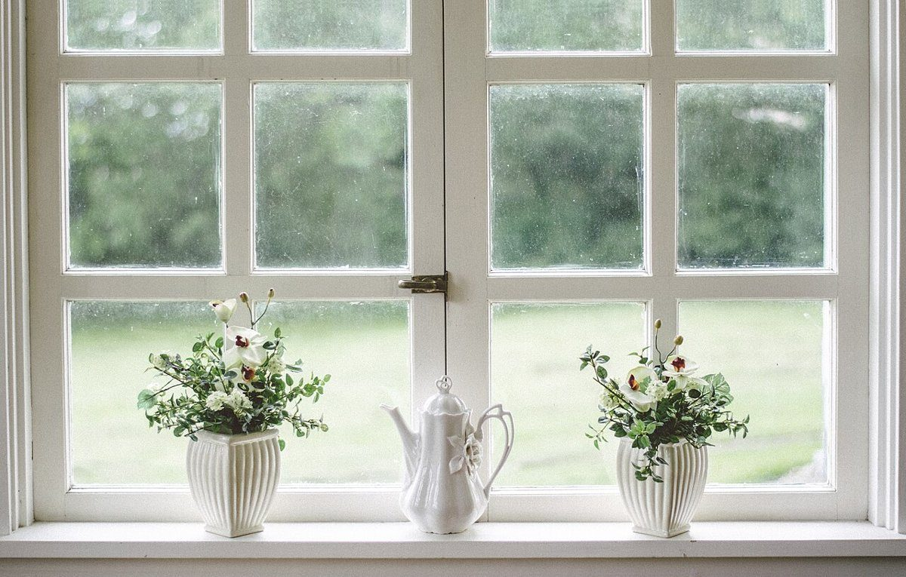

議題1
店のこと
お店について確認できているのは、所在地とInstagramのアカウントだけです。
決定事項(確認できていること)
- 店名は「Cafe 云々(うんぬん)」、業種はカフェ
- 所在地は京都府南丹市日吉町佐々江丸山9(〒629-0321)
- 電話番号はなし。連絡はInstagramから
- 営業時間・定休日・メニュー・価格・ご予約・駐車場は準備中
継続審議(未確認のこと)
お店の成り立ち、店名の由来、席数や店内の様子などは分かっていません。分からないことは憶測で書かず、空欄にしています。

……以下、云々。
想像してみる
制作側の想像メモ
この欄は制作側が想像して書いたものです。お店の実際の様子・考え・提供内容とは関係がありません。
「云々」という言葉から、制作側は「話の続きは、会ったときにゆっくり」という雰囲気を思い浮かべました。実際のお店がどんな時間を用意しているのかは分かりません。続きはInstagramで確かめてください。
